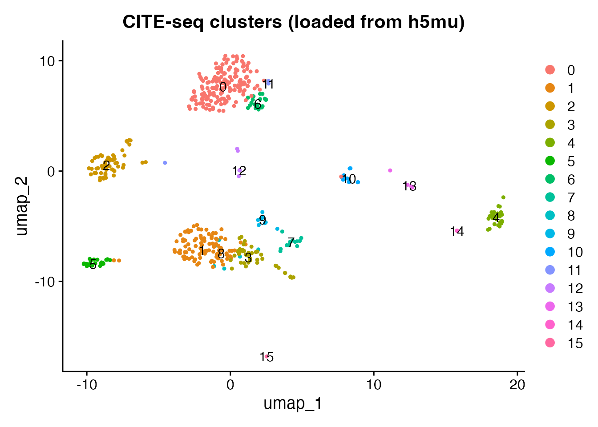
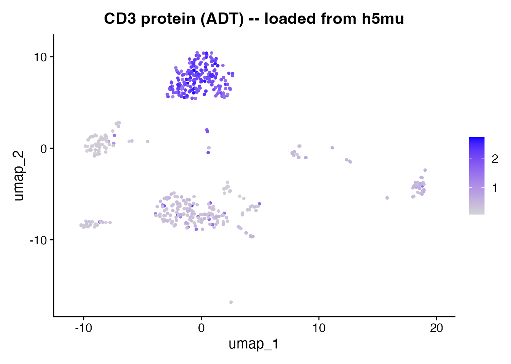
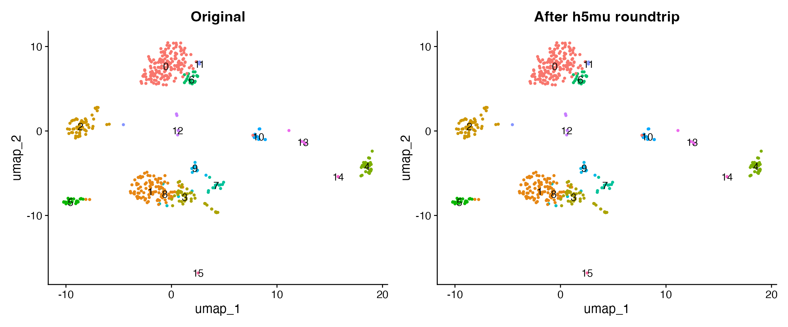

Introduction
The MuData
format (.h5mu) stores multimodal single-cell data in a
single file. Each modality (RNA, protein, ATAC) lives as a separate
AnnData object, sharing a common set of cell barcodes. This is the
native format for muon in Python.
scConvert reads and writes h5mu natively – no Python or MuDataSeurat
required.
| Format | Best for |
|---|---|
| h5ad | Single-modality (RNA only) |
| h5mu | Multi-modal (RNA + ADT, RNA + ATAC, etc.) |
Read h5mu directly
The shipped citeseq_demo.h5mu contains 500 CITE-seq
cells with two modalities: RNA (2,000 genes) and ADT (10 surface protein
antibodies). readH5MU() loads it into a Seurat object with
both assays intact.
h5mu_file <- system.file("extdata", "citeseq_demo.h5mu", package = "scConvert")
obj <- readH5MU(h5mu_file)
cat("Cells:", ncol(obj), "\n")
#> Cells: 500
cat("Assays:", paste(names(obj@assays), collapse = ", "), "\n")
#> Assays: ADT, RNA
cat("RNA features:", nrow(obj[["RNA"]]), "\n")
#> RNA features: 2000
cat("ADT features:", nrow(obj[["ADT"]]), "\n")
#> ADT features: 10UMAP of RNA clusters
DimPlot(obj, group.by = "seurat_clusters", label = TRUE, pt.size = 0.8) +
ggtitle("CITE-seq clusters (loaded from h5mu)")
Protein expression
After reading h5mu, the ADT assay contains only raw counts. Normalize with CLR (centered log-ratio) before plotting protein markers.
DefaultAssay(obj) <- "ADT"
obj <- NormalizeData(obj, normalization.method = "CLR", margin = 2, verbose = FALSE)
FeaturePlot(obj, features = "CD3", pt.size = 0.8) +
ggtitle("CD3 protein (ADT) -- loaded from h5mu")
DefaultAssay(obj) <- "RNA"Write and roundtrip
Load the same dataset from its Seurat .rds form, write
to h5mu, then read back and compare. This demonstrates that scConvert
preserves both assays through a full write/read cycle.
Modality name mapping
writeH5MU() automatically maps Seurat assay names to
standard MuData conventions:
| Seurat Assay | h5mu Modality |
|---|---|
| RNA | rna |
| ADT | prot |
| ATAC | atac |
| Other | lowercase name |
readH5MU() reverses the mapping when loading.
orig <- readRDS(system.file("extdata", "citeseq_demo.rds", package = "scConvert"))
h5mu_path <- file.path(tempdir(), "citeseq_roundtrip.h5mu")
writeH5MU(orig, h5mu_path, overwrite = TRUE)
cat("Wrote:", round(file.size(h5mu_path) / 1024^2, 1), "MB\n")
#> Wrote: 0.8 MB
loaded <- readH5MU(h5mu_path)
cat("Loaded:", ncol(loaded), "cells,", paste(names(loaded@assays), collapse = ", "), "\n")
#> Loaded: 500 cells, ADT, RNASide-by-side comparison
library(patchwork)
p1 <- DimPlot(orig, group.by = "seurat_clusters", label = TRUE, pt.size = 0.8) +
ggtitle("Original (.rds)") + NoLegend()
p2 <- DimPlot(loaded, group.by = "seurat_clusters", label = TRUE, pt.size = 0.8) +
ggtitle("After h5mu roundtrip") + NoLegend()
p1 + p2
Verify data integrity
cat("Cell count match:", ncol(orig) == ncol(loaded), "\n")
#> Cell count match: TRUE
cat("Assays match:", identical(sort(names(orig@assays)), sort(names(loaded@assays))), "\n")
#> Assays match: TRUE
common_cells <- intersect(colnames(orig), colnames(loaded))
common_genes <- intersect(rownames(orig[["RNA"]]), rownames(loaded[["RNA"]]))
orig_rna <- as.numeric(GetAssayData(orig, assay = "RNA", layer = "counts")[
head(common_genes, 100), head(common_cells, 100)])
rt_rna <- as.numeric(GetAssayData(loaded, assay = "RNA", layer = "counts")[
head(common_genes, 100), head(common_cells, 100)])
cat("RNA counts identical:", identical(orig_rna, rt_rna), "\n")
#> RNA counts identical: TRUE
common_adt <- intersect(rownames(orig[["ADT"]]), rownames(loaded[["ADT"]]))
orig_adt <- as.numeric(GetAssayData(orig, assay = "ADT", layer = "counts")[
common_adt, head(common_cells, 100)])
rt_adt <- as.numeric(GetAssayData(loaded, assay = "ADT", layer = "counts")[
common_adt, head(common_cells, 100)])
cat("ADT counts identical:", identical(orig_adt, rt_adt), "\n")
#> ADT counts identical: TRUECustom modality name mapping
You can override the default mapping when reading with the
assay.names argument:
Clean up
unlink(h5mu_path)Session Info
sessionInfo()
#> R version 4.6.0 (2026-04-24)
#> Platform: aarch64-apple-darwin23
#> Running under: macOS Tahoe 26.3
#>
#> Matrix products: default
#> BLAS: /Library/Frameworks/R.framework/Versions/4.6/Resources/lib/libRblas.0.dylib
#> LAPACK: /Library/Frameworks/R.framework/Versions/4.6/Resources/lib/libRlapack.dylib; LAPACK version 3.12.1
#>
#> locale:
#> [1] en_US.UTF-8/en_US.UTF-8/en_US.UTF-8/C/en_US.UTF-8/en_US.UTF-8
#>
#> time zone: America/Indiana/Indianapolis
#> tzcode source: internal
#>
#> attached base packages:
#> [1] stats graphics grDevices utils datasets methods base
#>
#> other attached packages:
#> [1] patchwork_1.3.2 ggplot2_4.0.3 Seurat_5.5.0 SeuratObject_5.4.0
#> [5] sp_2.2-1 scConvert_0.2.0
#>
#> loaded via a namespace (and not attached):
#> [1] RColorBrewer_1.1-3 jsonlite_2.0.0 magrittr_2.0.5
#> [4] spatstat.utils_3.2-2 farver_2.1.2 rmarkdown_2.31
#> [7] fs_2.1.0 ragg_1.5.2 vctrs_0.7.3
#> [10] ROCR_1.0-12 spatstat.explore_3.8-0 htmltools_0.5.9
#> [13] sass_0.4.10 sctransform_0.4.3 parallelly_1.47.0
#> [16] KernSmooth_2.23-26 bslib_0.10.0 htmlwidgets_1.6.4
#> [19] desc_1.4.3 ica_1.0-3 plyr_1.8.9
#> [22] plotly_4.12.0 zoo_1.8-15 cachem_1.1.0
#> [25] igraph_2.3.1 mime_0.13 lifecycle_1.0.5
#> [28] pkgconfig_2.0.3 Matrix_1.7-5 R6_2.6.1
#> [31] fastmap_1.2.0 fitdistrplus_1.2-6 future_1.70.0
#> [34] shiny_1.13.0 digest_0.6.39 tensor_1.5.1
#> [37] RSpectra_0.16-2 irlba_2.3.7 textshaping_1.0.5
#> [40] labeling_0.4.3 progressr_0.19.0 spatstat.sparse_3.1-0
#> [43] httr_1.4.8 polyclip_1.10-7 abind_1.4-8
#> [46] compiler_4.6.0 bit64_4.8.0 withr_3.0.2
#> [49] S7_0.2.2 fastDummies_1.7.6 MASS_7.3-65
#> [52] tools_4.6.0 lmtest_0.9-40 otel_0.2.0
#> [55] httpuv_1.6.17 future.apply_1.20.2 goftest_1.2-3
#> [58] glue_1.8.1 nlme_3.1-169 promises_1.5.0
#> [61] grid_4.6.0 Rtsne_0.17 cluster_2.1.8.2
#> [64] reshape2_1.4.5 generics_0.1.4 hdf5r_1.3.12
#> [67] gtable_0.3.6 spatstat.data_3.1-9 tidyr_1.3.2
#> [70] data.table_1.18.4 spatstat.geom_3.7-3 RcppAnnoy_0.0.23
#> [73] ggrepel_0.9.8 RANN_2.6.2 pillar_1.11.1
#> [76] stringr_1.6.0 spam_2.11-3 RcppHNSW_0.6.0
#> [79] later_1.4.8 splines_4.6.0 dplyr_1.2.1
#> [82] lattice_0.22-9 survival_3.8-6 bit_4.6.0
#> [85] deldir_2.0-4 tidyselect_1.2.1 miniUI_0.1.2
#> [88] pbapply_1.7-4 knitr_1.51 gridExtra_2.3
#> [91] scattermore_1.2 xfun_0.57 matrixStats_1.5.0
#> [94] stringi_1.8.7 lazyeval_0.2.3 yaml_2.3.12
#> [97] evaluate_1.0.5 codetools_0.2-20 tibble_3.3.1
#> [100] cli_3.6.6 uwot_0.2.4 xtable_1.8-8
#> [103] reticulate_1.46.0 systemfonts_1.3.2 jquerylib_0.1.4
#> [106] dichromat_2.0-0.1 Rcpp_1.1.1-1.1 globals_0.19.1
#> [109] spatstat.random_3.4-5 png_0.1-9 spatstat.univar_3.1-7
#> [112] parallel_4.6.0 pkgdown_2.2.0 dotCall64_1.2
#> [115] listenv_0.10.1 viridisLite_0.4.3 scales_1.4.0
#> [118] ggridges_0.5.7 purrr_1.2.2 crayon_1.5.3
#> [121] rlang_1.2.0 cowplot_1.2.0